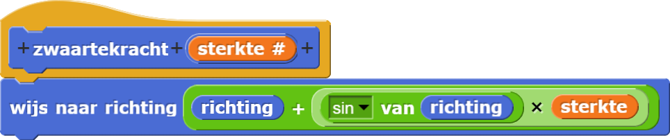
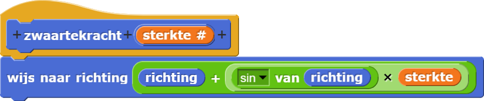

Fractalen in de Natuur
De computer-gegenereerde landschappen en wolken die je in Pixar (en andere) films ziet, zijn fractalen. Nu je zelf enkele structuren van fractalen gemaakt hebt, bekijk degene die je in de natuur kunt vinden eens.
-
In de natuur heeft zwaartekracht effect op hoe planten groeien. Dit is een voorbeeld van een
fractaal van een boom die een
zwaartekrachtblok gebruikt om de takken naar beneden te laten hangen ongeveer zoals zwaartekracht dat zou doen. De takkenstructuur van deze boom ziet er zo uit: .
De afbeelding hieronder laat zien wat er gebeurt als we zwaartekracht toevoegen. Experimenteer met
dit idee of werk aan een alternatief dat je interessant of mooi vind.
.
De afbeelding hieronder laat zien wat er gebeurt als we zwaartekracht toevoegen. Experimenteer met
dit idee of werk aan een alternatief dat je interessant of mooi vind.
 
